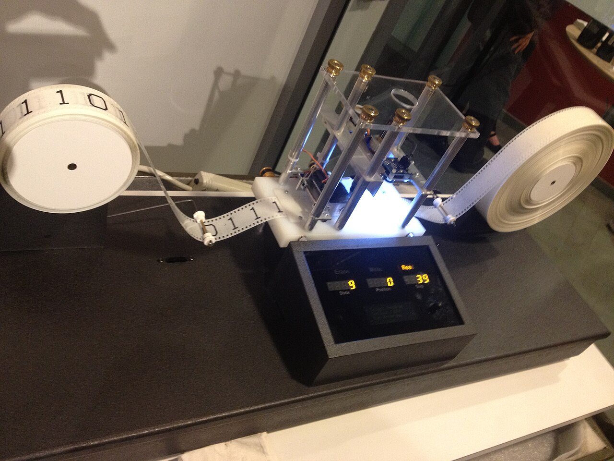
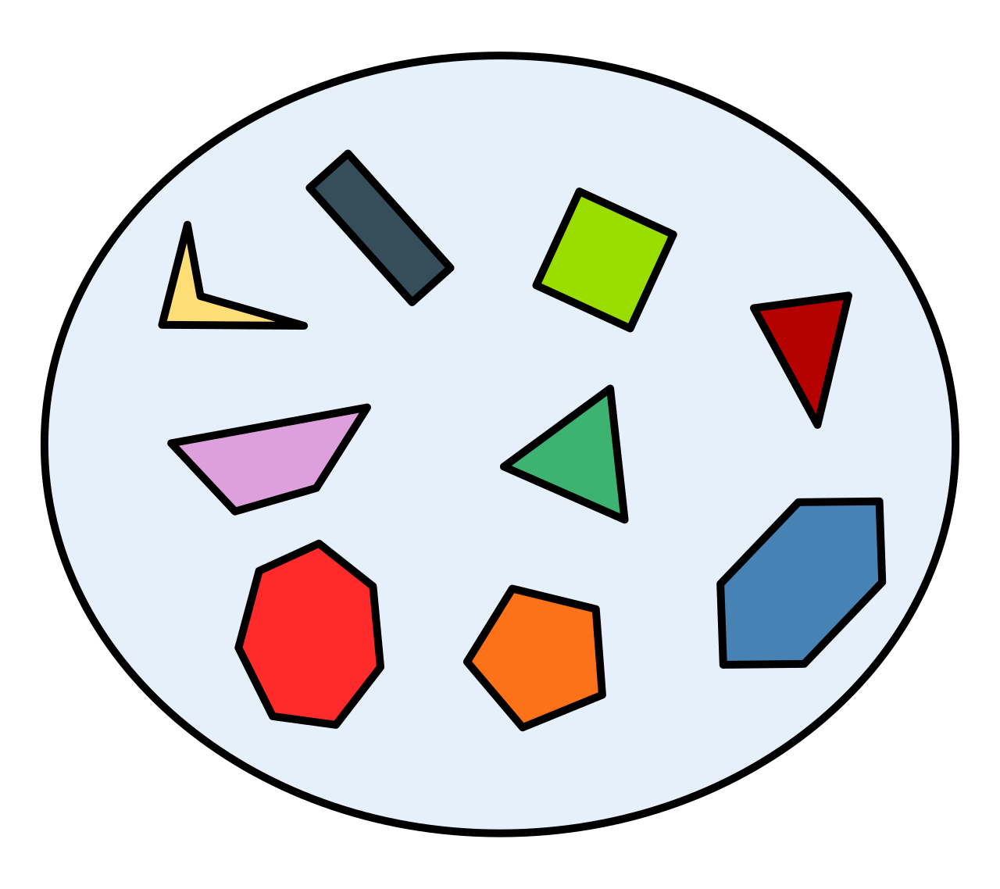

Turing Maschine
- Left/Right Arrow Key - Move Slides
- Up/Down Arrow Key - Extra Slides
- O - Overview
Mengen
- Unterschiedliche Elemente
{ 0, 1, 42 }, { a, b, 0 },{ 0, 5, 0 } - Beliebige Anzahl
- Leere Menge
∅ = { } - Unendlich Große Mengen
ℕ, ℝ - Element von: 1 ∈ ℕ
Teilmenge { 0, 1 } ⊆ ℕ { a, b } ⊆ { a, b }
Alphabet, Wort, Sprache
Alphabet
- Menge an Zeichen/Symbolen/Buchstaben
- Endlich
- Nicht Leer
- Σ = { a, b }
- Σ = { 0, 1 }
- Σ = { a, ..., z, A, ..., Z }
- Σ = { 1 }
Wort
- Endliche Folge von Zeichen aus einem Alphabet Σ
- Leeres Wort: ε
- Worte über { 0, 1 }: ε, 0, 100, 000
- Worte über { a, ..., z }: ε, a, ab, hello, world
Operationen/Eigenschaften
- Konkatenation: u + v = uv
- Länge: | aaa | = 3; | ε | = 0
- Präfix: Wenn u + v = w -> u ist Präfix von w
- Suffix: Wenn u + v = w -> v ist Suffix von w
- Teilwort: Wenn u + t + v = w -> t ist Teilwort von w
- w ist Präfix, Suffix und Teilwort von w
- ε ist Präfix, Suffix und Teilwort von w
Sprache
L ⊆ Σ*Σ = { a, b }
Σ* = { ε, a, b, aa, ab, ba, ...}
- L1 = { aa, ab, ba, bb }
- L2 = { ε, a, aa, ab, aaa, ...}
- L3 = { }
- L4 = Menge aller Wörter mit mehr a als b
- L5 = Menge aller Wörter mit keinen 2 a nebeneinander
Turing Maschine

Entwickelt 1936/37 von Alan Turing
Formale Bestandteile
- Eingabealphabet; X = { a, b }
- Bandalphabet, Obermenge des Eingabealphabets;
B = { a, b, A, # }; enthält ein "Blank" - Zustände (endliche Menge an Zuständen) Z
- Anfangszustand (Element von Z)
- Endzustände (Teilmenge von Z) - akzeptierend oder nicht akzeptierend
- Überführungsfunktion
Überführungsfunktion
- Liest ein Symbol aus dem Bandalphabet ein
- Kennt den aktuellen Zustand (kein Endzustand)
- Entscheidet das Symbol mit einem neuem zu überschreiben
- Entscheidet den Kopf nach rechts, links oder garnicht zu bewegen
Entscheidbarkeit
- Berechenbar
- Entscheidbar
- Semi-entscheidbar
Halteproblem
Es gibt keinen Algorithmus, der für ein beliebiges Programm entscheiden kann, ob es terminiert.semi-entscheidbar